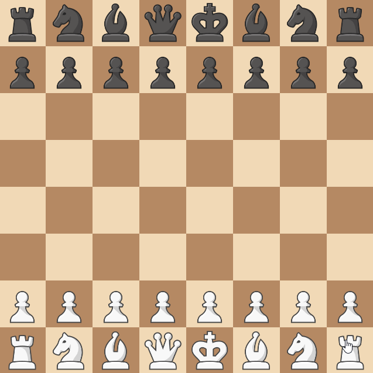

Siberian Swipe¶
Introduction¶
Siberian Swipe is a rule that originated from r/AnarchyChess. With rules like this, there's no official place we can find out how it works, so we have to define it ourselves.
Defining the Rule¶
When a rook hasn't moved yet, it can skip any pieces on it's file in order to capture a distant enemy rook.
Structuring the Rule¶
Now that we know what the rule does, we can start building our rule.
Because our rule only applies to Rooks - we only need to subscribe to
rook events. And because we only need to add to where the rook can move to,
and not how the movement works (We're just capturing a piece - not doing
anything special like summoning a piece or moving a piece to a different
location) - we only need to subscribe to the BeforeGetMoveOptions event.
In addition, if rooks are added in the middle of the game (For example by a promotion), the rule also needs to apply to them. So we need to do 3 things:
-
For all
- Current rooks
- Rooks that will be added in the future
-
We need to
- Add a capture move option.
from chessmaker.chess.base.rule import Rule
from chessmaker.chess.base.board import AfterNewPieceEvent, Board
from chessmaker.chess.base.piece import Piece, BeforeGetMoveOptionsEvent
from chessmaker.chess.pieces.rook import Rook
from chessmaker.events import EventPriority
class SiberianSwipe(Rule):
def on_join_board(self, board: Board):
for piece in board.get_pieces():
self.subscribe_to_piece(piece)
board.subscribe(AfterNewPieceEvent, self.on_new_piece)
def subscribe_to_piece(self, piece: Piece):
if isinstance(piece, Rook):
piece.subscribe(BeforeGetMoveOptionsEvent, self.on_before_get_move_options, EventPriority.HIGH) # (1)
def on_new_piece(self, event: AfterNewPieceEvent):
self.subscribe_to_piece(event.piece)
def on_before_get_move_options(self, event: BeforeGetMoveOptionsEvent):
pass # (2)
def clone(self):
return SiberianSwipe() # (3)
- When adding move options, it's generally a good idea to add them with a high priority. So that rules which remove options will be able to run after this rule and remove it if needed.
- We'll implement this later.
- Because our rule is stateless, we don't have to do anything special when cloning it.
Implementing the Rule¶
Now all that's left to do is implement on_before_get_move_options.
Use the annotations to help you understand what's going on.
from itertools import chain
from chessmaker.chess.base.move_option import MoveOption
from chessmaker.chess.base.piece import BeforeGetMoveOptionsEvent
from chessmaker.chess.piece_utils import is_in_board
from chessmaker.chess.pieces.rook import Rook
def on_before_get_move_options(self, event: BeforeGetMoveOptionsEvent):
move_options = event.move_options
rook: Rook = event.piece
board = event.piece.board # (1)
player = event.piece.player
position = event.piece.position
new_move_options = []
if rook.moved: # (2)
return
for direction in [(0, 1), (0, -1)]: # (3)
enemy_position = position.offset(*direction)
while is_in_board(board, enemy_position): # (4)
enemy_piece = board[enemy_position].piece
if isinstance(enemy_piece, Rook) and enemy_piece.player != player: # (5)
move_option = MoveOption(
enemy_position,
captures={enemy_position},
extra=dict(siberian_swipe=True) # (6)
)
new_move_options.append(move_option)
enemy_position = enemy_position.offset(*direction)
event.set_move_options(chain(move_options, new_move_options)) # (7)
- As mentioned earlier, it is recommended to use the event's board and not the one
passed to us in
on_join_board. - If the rook has moved, it can't do a siberian swipe.
- We check both up and down.
- We search for rooks in that direction - ignoring all pieces that might block us,
and use
piece_utils.is_in_boardto check if we reached the edge of the board (or a hole). - We want our move to be able to skip over all pieces, so we ignore all pieces that aren't enemy rooks.
- If there is, we create a move option that captures it. Notice that
we add
extra=dict(siberian_swipe=True)to the move option. For our use case, this is only used for display purposes, but if we wanted to modify how the move works using theBeforeMoveEventandAfterMoveEventevents, we could use this to check if the move is a siberian swipe. - Because the move options are an iterable, we can't just append to them. Instead, we use itertools.chain to create a new iterable that contains both the old move options, and the new move option we created.
Finishing Up¶
Now that we've implemented our rule, we can add it to the board:
And that's it! We've implemented a rule that adds a new move option to rooks. Let' see it in action:
